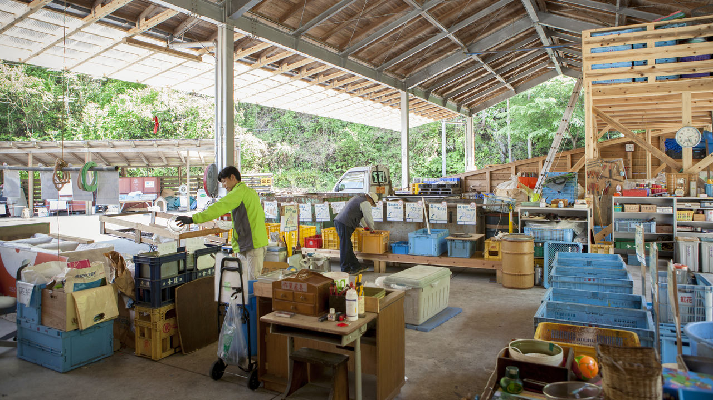

es un pueblo de 1700 habitantes que auto-recicla casi todos los residuos que genera, un ejemplo de sostenibilidad y disciplina
Un pequeño pueblo perdido en las montañas de la isla de Shikoku, en Japón, se ha convertido en un referente en reciclaje a nivel mundial. Kamikatsu se ha marcado como objetivo eliminar todos sus desechos para 2020, y desde 2002 trabaja en su Proyecto Cero Residuos. Este es un sistema de difícil aplicación en grandes ciudades pero sí podría ser aplicable a comunidades más pequeñas y un ejemplo a seguir en materia de reciclaje.
